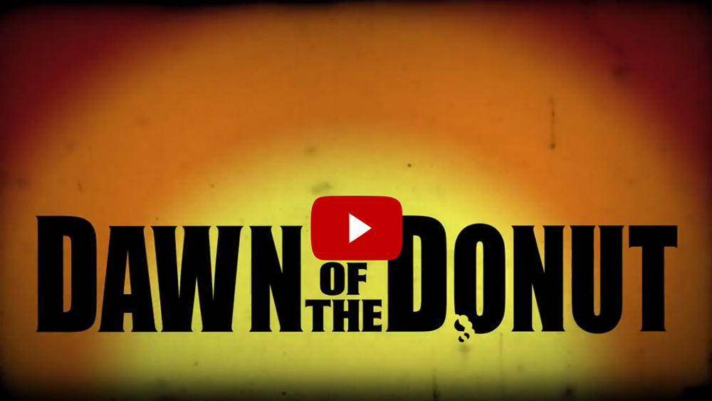

Portfolio
dol.wa.gov new homepage hero section
{kind=link}
To improve customer communication for high priority items, a hero spot was added to the homepage.
For this project, DOL needed a way to highlight major initiatives and projects. Messaging can be setup on a schedule or static. This allows us to schedule messaging at the appropriate time and keeps the homepage fresh. The mobile view shows all the content, except for the image to reduce vertical scrolling.
Site-wide messaging on dol.wa.gov
{kind=link}
This messaging system allows the Department of Licensing to keep it's customers informed about important changes.
Integrated into the site templates and controlled from a single include file, DOL can quickly and easily post messages to:
- a single page
- a section of the site
- the entire site
This eliminated the need to update each individual page. PHP coding checks for the current page and if it's a match we show the message. We can also style each message differently and schedule them to start or end on a specific date. With the projects and office moves that have been going on, it's made keeping the public informed much more efficient.
Scheduling content on dol.wa.gov

Built to make site maintenance easier on the web publisher and the content owner, DOL can schedule content to show or hide on a specific date.
Without a content management system (CMS), managing content can be a little more challenging. Content such as meeting minutes, contract announcements, etc. were manually added and removed. If a content owner forgot to keep track and send a request, or the web publisher hadn't edited the page in some time, older content would remain on the site. Using PHP to check for the current date and the show or hide date, content is automatically handled without intervention. This led to better customer satisfaction and less work for everyone. .
dol.wa.gov mobile-friendly full site

Utilizing server-side detection and a new color scheme, this was one of the first WA state government sites to be usable across all devices.
Towards the end of 2013 it we decided that the entire dol.wa.gov site needed to be accessible to mobile devices. Within one week I had the site templates updated to use server-side detection to serve all devices. Based on the analytics and testing, phones would get one view and desktop and tablets another. Through the detection script and PHP coding we were now able to send specific assets to the browser. This enabled us to send the smallest payload to the device and ensure our pages loaded quickly. The coding to make the entire site mobile-friendly was completed in 1 week. I launched the mobile-friendly version of the site in January 2014. In 2018 we're hoping to redo the site as a responsive/server-side detection hybrid making the entire site responsive.
A.D. Joe mini-poster
{kind=link}
Mixing multiple elements to create a "thank you" mini-poster for a co-worker.
We were having some Active Directory (A.D.) issues with our WordPress intranet site and Joe, our resident A.D. expert was able to figure out the right credentials to setup so that our users could login to the site with their network ID and password instead of having to create and remember yet another ID/password combo. I took the poster for the movie and:
- Added and modified the old school logo
- Replaced the main character's head with Joe's
- Added additional wording
- Made some subtle color correction
This was one of my first composite images and it turned out pretty good for the short amount of time I had to spend on it.
All images are owned by the copyright and trademark holders. This was created for educational purposes.
Recorded Memories, Spokane WA (Ad)

Serving Spokane since 1987, Recorded Memories sells new and used music and memorabilia.
In an effort to improve exposure, I created a video ad for the store to showcase the kinds of items they sell, their location, and how to contact them. The intent of the video was to post it on their website and social media. I tried to keep it short and to the point while still getting the important details across. Based on the positive feedback we've received from the owner and his customers, I'd say it was a success!
Recorded Memories responsive website

Combining WordPress and a responsive template, the site is usable across devices.
Now in it's 4th iteration, the website is fully responsive with a WordPress back-end to simplify management of the site. Updates to the core include a customized template and plug-ins. They all serve to improve site management, SEO, and the user experience. The next phase will include a new template that improves page load time and the usability of the site.
Dawn of the Donut, Spokane WA (Teaser Ad)
Dawn of the Donut was Spokane's first and only zombie-themed donut shop.
Capitalizing on the zombie craze, they wanted to bring something unique to the local donut market. This teaser video would give potential customers a hint at what was coming. Inspired by George A. Romero's zombie classics, the video utilized an old school film look and a few of their designer donuts. The store was very happy with the video. Unfortunately they closed in 2014.
4D4Films responsive website

Developed and designed to make it easy to find out about the latest projects, send communications, and buy DVDs and other merchandise.
Built on top of WordPress with a custom template and coding, the responsive design worked across all devices and had fast load times. This was the 5th iteration of the website. It was originally a static website with some PHP coding for includes, dates, and dynamic content. Eventually it was migrated to WordPress to take advantage of the CMS. This was also the home of Movies Rated "W" a movie-themed podcast, which was also produced by 4D4Films. The site is now offline. The 4D4Films YouTube Channel is still online and has most of their projects available for viewing.
License eXpress (LX) account update screen designs

This design flow shows the steps a customer would take to update their account.
I used Balsamiq mockups to design these wireframes for the coders on the project. The flow walked through the various screens a customer would need to interact with. To see all the details, checkout the LX account screens mockup. LX, now with over 1,000,000 registered users, allows customers to manage their driver’s license, ID, and vehicle tabs. They can also complete a business transaction for their firm, shop, or agency and they can use it for their vehicle business. Customers can also see more information about their licenses than they can using our standalone online services.
Travelogue: Winlock, WA "The World's Largest Egg"
Join us on our first Travelogue video as we visit Winlock, WA and the World's Largest Egg.
One day, my father-in-law was telling us about "The World's Largest Egg". We were instantly intrigued and decided to go for a drive to find the world-famous egg. With a general idea of where it was, we decided to leave maps and GPS behind and took off in search of the egg. After a few side-trips we found it in Winlock, WA! We shot some footage on our cell phone and took a few pictures and headed home. Once we got home, researched the egg and it's history. While researching the egg, we found a photographer online that had taken some photos in the area. We contacted him about using a few of his pictures in the video and he as happy to contribute to the project!
dol.wa.gov mobile splash page

Combining code and design, this was one of the first mobile-friendly government sites in the State of Washington.
In 2011, we found mobile visits increasing to dol.wa.gov so I set out to create a mobile landing page for our customers. Phone users made up the overwhelming majority so we chose to focus on their experience. We started small with content or online services that were mobile-friendly. For the content I decided on includes so there would be a single source to update. I continued to tweak the design and content as time went on. As 2013 came to a close, it was finally time to make the entire site usable on mobile devices. I retired these pages in January of 2014 when we released the mobile-friendly update to the full site.
Cedar Loft Cabin website

Designed to showcase the cabin, enable customers to make online reservations, and give the owner a way to update the content.
I worked with the owner to carry the branding throughout the design and provide the information a potential customer would need. Built in classic ASP, I incorporated the TinyMCE editor and separated the content from the page templates. I also coded a printer-friendly option that would conserve ink when printed. We were in talks to update the site and make it fully responsive when the owner decided to sell the cabin.
Deep Blue: A glimpse into Crater Lake DVD cover and label
{kind=link}
This short documentary gives a glimpse inside one of our country's most awe-inspiring displays of nature.
For the 4D4Films project Deep Blue: A glimpse into Crater Lake, we wanted to showcase the amazing views of the lake. To emphasize the lake, the rest of the caldera is in grayscale. Text sits on top of the image, but I tried to leave as much of the lake visible as possible. This short has been one of our best selling DVDs.
In The Event Of A ZOMBIE ATTACK premier party flyers and tickets

Promotional materials designed for the premier party.
When it came time for the premier of In The Event Of A ZOMBIE ATTACK, 4D4Films needed flyers and tickets for the evening. Artwork from the film helped tie everything together. We partnered with a local business and screened the film in the room they gave classes in during the week. The screening sold out and we ended up having another showing the next day.